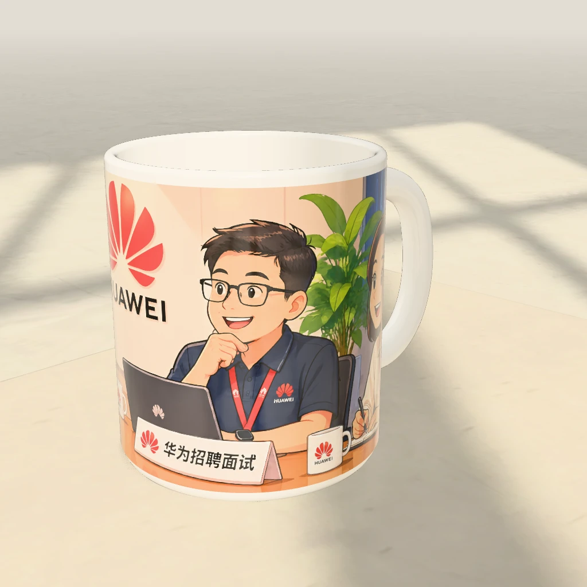

PRODUCT / EXPERIMENTS / EVIDENCE
USEIT
测试与观察。
记录产品生成的真实表现。
从最终效果回到每一次工具调用，保留成功、失败和未验证的部分。
新增版本 / B01 V1 / 2026.11.15
新图完整复测：仍未得到带图三维盒子
约 4 分 52 秒 · 单次参考费用 $0.4944 · 6 次失败或拒绝。新图 left 面配准失败，整版未保存，最终是白模。
旧图回放通过与新图完整流程失败分别记录，历史结果保留。
01 / 全品类测试
12 个品类，完整生成链路。
测试日期：2026 年 11 月 13–15 日
原报告 15 次测试 · 另有 9 次独立复测 · 每次美元参考费用
查看测试报告光栅卡：只看三个主版本
① 原始版 · 15分 1秒 → ② 第一轮优化 · 5分 10秒 → ③ 第二轮优化 · 代表实测 1分 32秒
第三版的实测：较完整需求 1分 32秒（0次失败）；猫咪短句 3分 11秒（1次失败，三维入口）；海底短句 2分 55秒（0次失败）。两句短需求尚未触发快速流程，不能把最快一轮当作通用速度。
第一轮改了什么 · 第二轮怎么改的 · 第三版全部测试与费用
插盖盒：五面配准问题已定位并修复。
相同原图回放 13/13 面映射，隔离装配验证通过；应用内完整复测待做。查看 B01-R1 独立验证 →